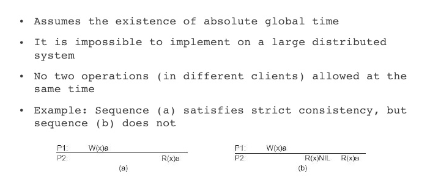
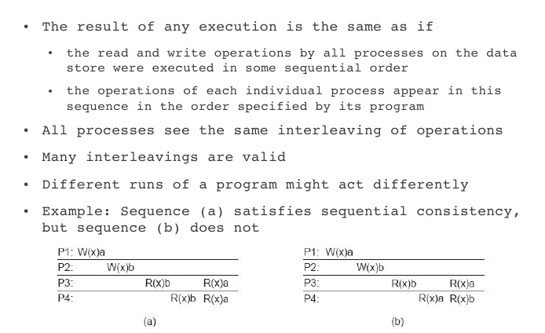
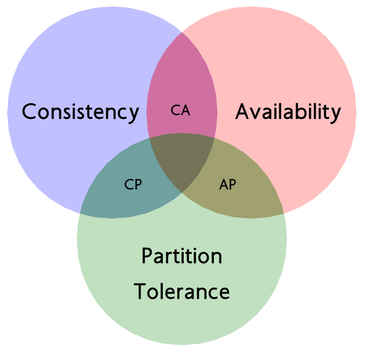

Building a Distributed System
Part One: The Basics
Presented by Rich Beaudoin / @RichGBeaudoin April 28th, 2016
Overview
- What is a distributed system?
- Why distributed systems?
- Some Fundamental concepts
- Lamport: A Distributed System From Scratch
What is a distributed system?
A distributed system is a software system in which components located on networked computers communicate and coordinate their actions by passing messages
Source: Distributed Systems: Concepts and Design (5th Edition). Boston: Addison-Wesley
Some Examples


Why Distributed Systems?
- Fault tolerance, and availability
- Horizontal scalability
- Decentralization
- An opportunity to geek out :)
Fundamentals: Consistency Models
"More formally, we say that a consistency model is the set of all allowed histories of operations. If we run a program and it goes through a sequence of operations in the allowed set, that particular execution is consistent. If the program screws up occasionally and goes through a history not in the consistency model, we say the history was inconsistent. If every possible execution falls into the allowed set, the system satisfies the model." - Kyle Kingsbury @aphyr
Fundamentals: Consistency Models
Strict Consistency
Fundamentals: Consistency Models
Sequential Consistency (Linearizability, Serializability)
Fundamentals: Consistency Models
Causal Consistency
- Writes that are "causally related" must be seen by all processors same order
- Includes "potentially" causal relationships
- Concurrent writes are allowed to be seen in different order on different processors
Fundamentals: CAP Theorem
We need to be careful about applying CAP incorrectly
Fundamentals: Time
- Clocks can drift, synchronizing time across nodes is difficult
- Without time, how can we order events across the system?
- Lamport Timestamps (logical clocks)
- Vector Clocks
Be sure to check out Time, Clocks, and the Ordering of Events in a Distributed System by Lesile Lamport
Fundamentals: Consensus
The system will have to be brought to consensus to handle situations like:
- Leader Election
- Commiting Transactions
- State Machine Replication
To do this we can use protocols and alogorithms like:
- Raft
- Paxos
- Or a tool library like Zookeeper...
Introduction to Apache Zookeeper
- Distributed system for building distributed systems!
- Provides a hierarchichal namespace of values (i.e. znodes)
- Clients can create/delete znodes
- Znodes can be ephemeral and/or sequenced
- Clients can "watch" for znode changes

Introducing Lamport
- A distributed system built in Go
- An academic exercise to learn about distributed systems
- Initially using Zookeeper "recipes" for leader election
- An opportunity to verify correctness of consistency models
Questions??
References
- Distributed Systems: Concepts and Design, 5th Edition
- Strong Consistency Models- Kyle Kingsbury (@aphyr)
- Designing Large-Scale Distributed Systems - Ashwani Priyedarshi
- CS865 – Distributed Software DevelopmentLecture 7 - Pace University
- CAP Theorem - Brewer, Gilbert, Lynch
- Time, Clocks, and the Ordering of Events in a Distributed System